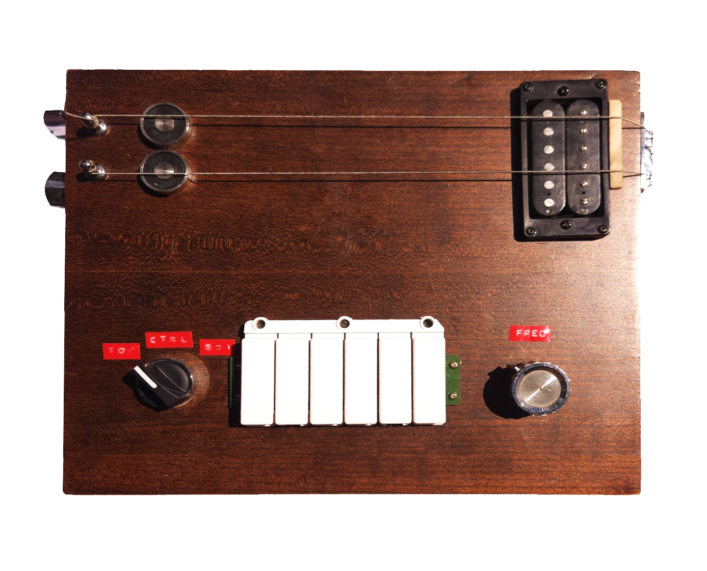

adlow.online 
(θ,z) Crosstalk Echo - 2025

desc
(θ,z) is an experimental magnetic tape loop player designed for freeform exploration through dual-axis control. In a departure from traditional tape players and recorders, of which virtually all are linear, this device enables users to navigate bidirectionally across both rotational (θ) and perpendicular (z) axes of a loop of 2” tape.
This allows recording and manupulation of sound through uniquely non-linear, intuitive methods using a joystick and single rec/play switch. Computer controlled motors and actuators give the user tactile access to the multidimensional possibilities of magnetic recording, which is territory typically reserved for the black box processes of hard drives and floppy disks.&

whats next